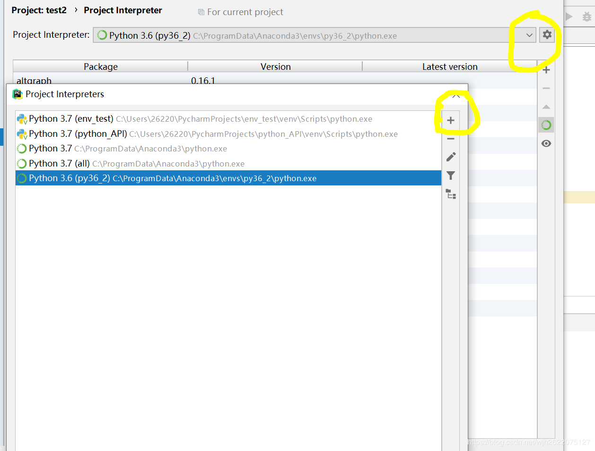
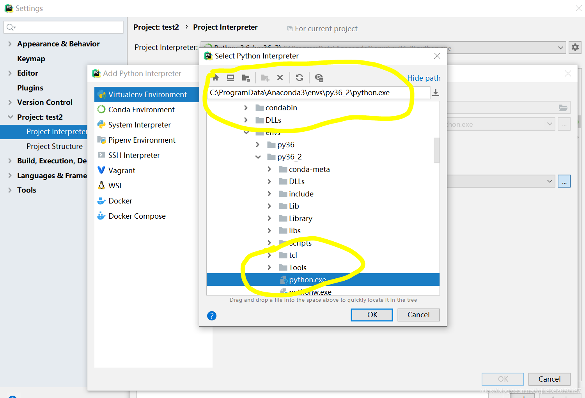
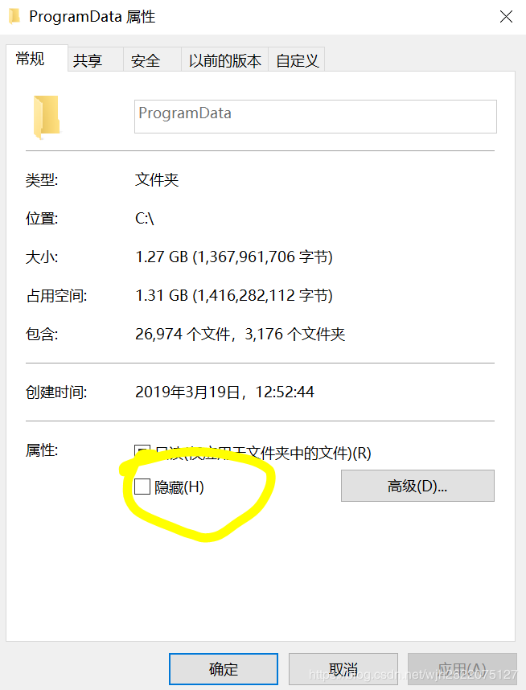
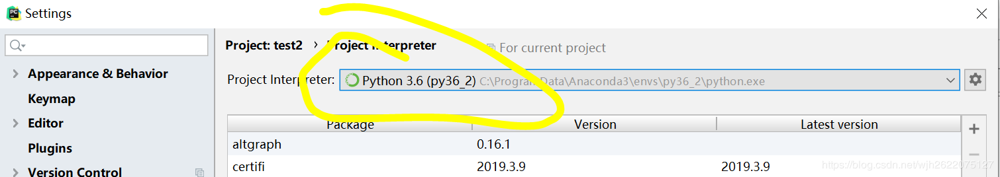
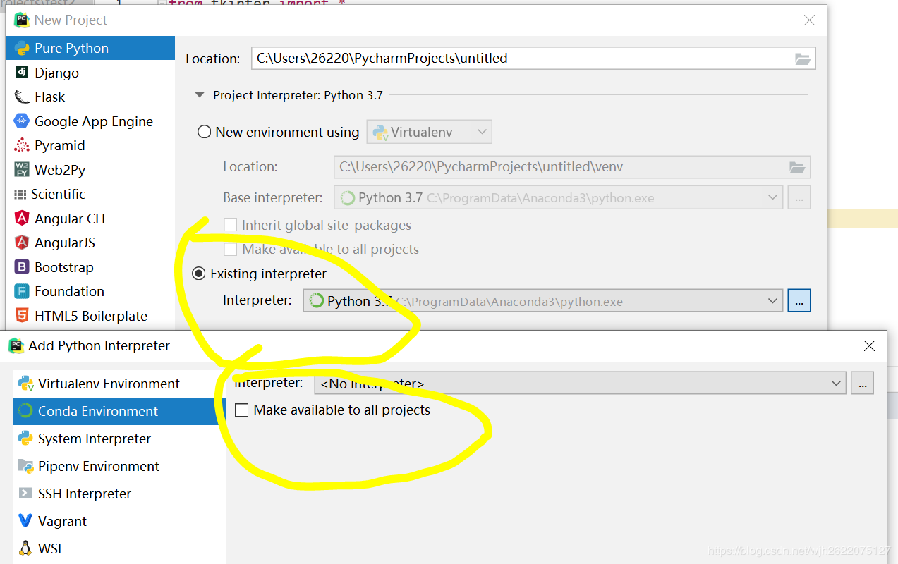

Anaconda虚拟环境及PyCharm项目环境设置
Contents
Anaconda虚拟环境
1、创建环境
conda create --name your_env_name python=3.6
或者
conda create -n your_env_name python=3.7
新建一个环境
2、查看环境
进入Anaconda Prompt，使用conda info -e查看所有环境和当前环境
3、激活环境
使用activate py36 激活虚拟环境
4、复制环境老环境到新的环境中
conda create --name new_env_name --clone old_env_name
5、删除某个环境
conda remove --name your_env_name --all
6、导出和导入环境（分享）
切换到了要导出的环境之后，使用命令
conda env export > environment.yml
将当前环境导出
使用命令
conda env create -f environment.yml
建立（导入）新的环境
7、查看指定环境的包
conda list -n your_env_name
8、为某个指定环境安装包
conda install -n env_name package_name
9、添加conda虚拟环境为jupyter kernel
conda install ipykernel
python -m ipykernel install --user --name 环境名称 --display-name 名称(不需要引号)
注意这个命令要在安装了ipykernel的环境下进行。
如果出一些奇怪的故障，重启jupyter notebook。
参考：https://blog.csdn.net/menc15/article/details/71477949/
10、ubuntu 中的激活环境
用命令source activate env-name
因为最近使用opencv，4版本的有很多不兼容的地方，所以我安装一个3.4版本的虚拟环境。 编辑批量安装包
|
|
使用命令pip install -r requirements.txt 安装
PyCharm项目环境配置
之前每次新建一个PyCharm项目，他给我的环境都是一个新的虚拟环境，所以很不方便而且还要项目文件很冗余，打开项目的速度又慢。于是设置了默认的本地python环境。
1、找到file->settings->project interpreter，里面有很多的project interpreter。点击右边的设置，然后点击+，即可添加新的环境。如果他没有检索到我们使用的python环境，就需要手动添加。

2、选择Existing environment，从目录里面选择自己需要使用的python环境。
如我在anaconda里面添加的新的虚拟环境就在下面这个目录下，找到python.exe添加即可。

3、需要注意的是，在我的电脑里面，C:\ProgramData这个目录默认是隐藏的，所以无法直接从pycharm中找到这个目录。只需要找到这个隐藏文件夹，取消隐藏即可。

4、选择好了环境之后，我们可以设置当前项目的环境

5、在新建一个项目时，我们可以设置环境为已存在的，找到目录中这个环境，并勾选对所有项目生效。这样我们的默认环境设置就大功告成了。 
Author 姬小野
LastMod 2019-05-05